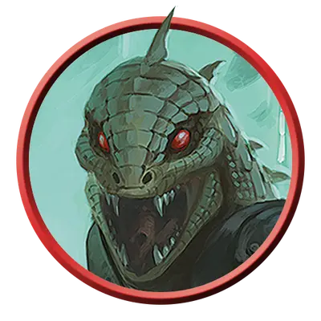

Саррух деспот
Sarrukh Tyrant
Среднее Чудовище, Нейтральное Злое

Класс Защиты 19 Инициатива +8 (18)
Хиты 256 (27к8 + 135)
Скорость 40 футов
| мод | спас | ||
|---|---|---|---|
| СИЛ | 22 | +6 | +12 |
| ЛОВ | 15 | +2 | +9 |
| ТЕЛ | 20 | +5 | +12 |
| мод | спас | ||
|---|---|---|---|
| ИНТ | 23 | +6 | +6 |
| МДР | 19 | +4 | +9 |
| ХАР | 18 | +4 | +4 |
Иммунитеты Огонь; Испуганный, Очарованный
Чувства пассивное Восприятие 20, Истинное зрение 120 футов
Языки Общий, Драконий, Телепатия 120 фт.
Опасность 17 (18 000 опыта; БВ +6)
Особенности
Легендарное сопротивление (3/день). Если саррух проваливает спасбросок, он вместо этого может в нём преуспеть.
Сопротивление магии. Саррух совершает с Преимуществом спасброски от заклинаний и прочих магических эффектов.
Действия
Мультиатака. Саррух совершает две атаки Укусом или Жуткой фальшардой в любой комбинации.
Укус. Бросок рукопашной атаки: +12, досягаемость 5 фт. Попадание: 13 (2к6 + 6) Колющего урона плюс 13 (3к8) урона Ядом.
Жуткая фальшарда. Бросок рукопашной или дальнобойной атаки: +12, досягаемость 5 фт. или дистанция 20/60 фт. Попадание: 17 (2к10 + 6) Колющего урона. Если цель — существо, она Испугана. Если цель уже Испугана, она получает 10 (3к6) дополнительного Психического урона. Промах или попадание: Фальшарда магическим образом возвращается в руку сарруха сразу после совершения дальнобойной атаки.
Сотворение заклинаний. Саррух сотворяет одно из следующих заклинаний, не нуждаясь в Материальных компонентах (заклинательная характеристика — Интеллект, Сл спасброска заклинаний 20):
Неограниченно: Невидимость, Обнаружение магии, Превращение
2/день каждое: Наблюдение, Огненный шар, версия 5-го уровня, Силовая стена, Телепортация
Реакции
Власть над перевоплощением. Условие: Видимое саррухом существо перевоплощается. Эффект: Саррух сам выбирает конечную форму из доступных перевоплощающемуся существу или предотвращает перевоплощение этого существа.
Легендарные действия
У этого существа есть 3 использования Легендарных действий; оно может немедленно после окончания хода другого существа потратить одно использование, чтобы совершить одно из следующих действий. Существо восполняет все потраченные использования в начале каждого своего хода.
Поползновение. Саррух перемещается на расстояние вплоть до половины своей Скорости, не Провоцируя атак, и совершает одну атаку Укусом.
Ужасающий взгляд. Спасбросок Мудрости: Сл 20, одно видимое саррухом существо в пределах 30 футов. Провал: 18 (4к8) Психического урона, и цель Испугана. Успех: Только половина урона.
Извращённая метаморфоза. Саррух использует Сотворение заклинаний (Превращение), и если цель проваливает спасбросок, она Ошеломлена до конца своего следующего хода. Саррух не может совершить это действие снова до начала своего следующего хода.
Бонус мастерства +6
Среда обитания Подземье
Сокровища Реликварные
Саррухи
Злобные змееподобные угнетатели
Могущественные мастера магии, саррухи некогда повелевали жестокой империей, простиравшейся по всему Фаэруну, но она пала десятки тысяч лет назад. В последовавшие тысячелетия многие виды, созданные саррухами, довели их почти до полного вымирания. В уединённых анклавах сохранилось лишь небольшое число саррухов, включая и небольшую общину под Цитаделью в самом сердце горы Горы Тэй.
Саррухи обладают змеиными нижними телами и головами, но их торсы напоминают человеческие. Их блестящие глаза светятся внутренним огнём. Саррухи живут до тысячи лет, и многие ожидают, что их империя возродится.
Большинство оставшихся саррухов — деспоты, фанатично верящие в неизбежность возрождения своей империи. Деспоты живут кланами с другими саррухами, бродя по руинам и подчиняя себе соседствующих существ. Они владеют лишь малой долей магической силы, которой обладали правители их прежней империи.